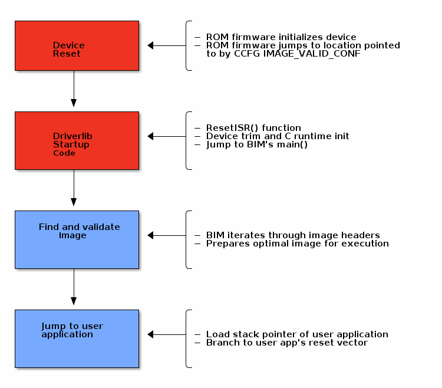

Boot Image Manager (BIM)¶
The Boot Image Manager resides on the OAD target, and is responsible for loading new images after a download has completed. The BIM executes on a device reset and determines if a firmware update needs to be applied. If no update is being applied, then the BIM will transfer program execution to the main application image.
Overview & Software Architecture¶
BIM is a fully executable application that is independent of any high level protocol stack or user application. It is guaranteed to run on boot. BIM enables power loss fault tolerance during OAD. If the device power is lost during OAD, the BIM will still be able to run from reset and revert to a working image if one is available. The BIM is intended to reside permanently on the chip and cannot be updated via the OAD process.
BIM executes before kernel initialization takes place so the design is single threaded and bare metal. Hardware access is accomplished through driverlib.
As a separate application, BIM requires its own interrupt vector table and linker file. It will produce a fully executable image that must be merged with the user application image in order to create a functional OAD enabled firmware system.
In general, BIM is responsible for finding and analyzing OAD image header. From a high level BIM does the following:
Check for newly downloaded images from a recent OAD.
If available, copy the newly downloaded images to their target location in internal flash
Dynamically locate the entry point of the valid image and jump to it
The following section will cover the BIM boot procedure and image checking routine in detail.
Boot procedure¶
On reset, the software in the ROM of the CC13xx or CC26xx will execute basic startup
routines, and then jump to the location pointed to by the CCFG’s
IMAGE_VALID_CONF field. More information about the fields of the CCFG and
the generic device boot procedure is detailed in the CC13x2 CC26x2 SimpleLink Wireless MCU Technical Reference Manual. The BIM is setup to
link the CCFG as part of its image. This is another failsafe mechanism to ensure
that a CCFG is always present on the device. To enable this feature, BIM uses a
custom CCFG where the value of the IMAGE_VALID_CONF field points to BIM’s
reset vector table. More information about the CCFG and the IMAGE_VALID_CONF
is available in the CC13x2 CC26x2 SimpleLink Wireless MCU Technical Reference Manual.
In summary, the boot ROM code will jump to the ResetISR() in BIM’s
vector table. Being a bare metal application, BIM uses the toolchain
specific boot code provided in driverlib.
The reset ISR code can be found in driverlib under the startup folder. In
summary, it performs the following:
Device specific trim functionality
C/C++ runtime initialization
Jump to BIM’s
main()
See the figure below for a graphical representation of the boot procedure. Red boxes indicate driverlib/ROM code, blue boxes represent BIM code.

Device trim¶
The device trim function is responsible for tuning hardware settings of the device to ensure stable and optimal operation. It must run at least once every time the device boots, but may be ran more than once. Parts of the trim function are dependent on the CCFG which is another reason why it is linked with BIM.
By default, both BIM and the user application will trim the device.
This offers the benefit that the user application may link to a newer version of the trim function. This comes at the cost of a small amount of additional flash in the user application.
Warning
It is recommend to leave device trim enabled in both the BIM and the user application to enable development via a debugger without a BIM present.
Removing the device trim for the user application is only suggested for final
production code. Additional validation should be performed on images with
additional trimming disabled. App level trimming can be disabled by modifying
the Boot module within the kernel’s *.cfg file.
Halt In Boot (HIB)¶
There is a bug with the emulation software package that would cause the processor to enter Halt In Boot (HIB) on the next bootup when previously connected to JTAG. In the case of OAD, that is when a system reset is invoked at the end of an OAD procedure.
Note
This only affects devices connected to JTAG, such as the XDS110 on LaunchPads. This issue should not appear in field devices or devices that are not connected to JTAG in general.
The reason why the bug occurs is that the TCK pin (which powers up the JTAG power domain) is left in tri-state. When a system reset occurs after an active debug connection, the TCK pin could potentially experience unwanted toggling from noise. HIB erroneously detects this as debug activity, and subsequently halts the processor.
Reset problems after programming with JTAG¶
A symptom of this bug occurring is that OAD does not reboot into BIM after a successful OAD. A temporary workaround is to simply unplug/replug or hard reset the device, and the device will boot as normal.
However, a permanent fix is available. As of version 8.0.27.9 of the emulation software package, the XDS110 emulator now drives the TCK pin high instead of leaving it in tri-state. This removes any unwanted toggling on the TCK pin after a system reset, which no longer triggers HIB.
To update the emulation software packages, start by downloading the latest XDS Emulation Software Package. Then, depending on which tool you are using, follow the corresponding step-by-step guide below.
For Flash Programmer 2:
Run the above installer
Copy the contents of the emulation software package to
<Flash Programmer 2>/config/xds/*
For Code Composer Studio:
Run the above installer
Follow the steps described in Section Manual CCS Installation from the XDS Emulation Software Package page
For IAR:
Run the above installer
Change the debugger options of the project to point to the newly installed package

Update XDS emulation software package in IAR¶
Locating and Preparing a user application¶
Besides booting and trimming the device, BIM’s primary functionality is to find and prepare a user application to run on the CC13xx or CC26xx.
BIM for Off-Chip OAD¶
At steady state, the normal case is that a valid image exists in internal flash and no image in the external flash has been marked as needing to be copied. In this case, BIM will validate that the image on internal flash and execute it by loading the stack pointer and jumping to the image’s reset vector location. BIM determines the location of the reset vector and stack pointer of the image through the OAD image header attached to it.
Note
As a convention, the vector table comes immediately after the image header in OAD enabled images. The BIM and the image header are tightly coupled, refer to the sec-oad-image-header chapter for more detail on the image header vector and its fields.
Sequence diagram for BIM image selection process¶
The image above is illustrated in words below. In order to determine which image is best to run, BIM takes the following measures:
At startup, BIM looks for a valid image header in external flash by reading the first 8 bytes to find the valid External Flash Image Identification value.
After a valid header is found, it reads the entire header from ext flash and verifies the compatibility of BIM and image header versions. Then it checks if the ‘Image copy status’ is set to be copied to the on-chip flash(0xFE) and has a valid CRC (CRC status=0xFE).
If it finds status ‘CRC not calculated’(CRC Status = 0xFF), it calculates the CRC of the external flash contents and updates the CRC status byte in the external flash.
On finding the invalid CRC it moves on to read the next image’s header.
If a valid image is found, BIM copies the image to on-chip flash, as per the image copy procedure.
After the copy, the CRC is re-checked on internal flash to ensure the copy succeeded.
If the copy failed the status byte is updated and the bim will continue searching external flash.
If the copy succeeded, then the BIM will jump directly to the application image, and the search process ends.
If BIM reaches the end of the image header region in external flash without finding a valid image, then it will try to find an on-chip image and execute it.
If BIM fails to find a valid image internal flash, it will attempt to revert the factory image if there is one present.
BIM will put the device to low power mode if it fails to find a valid application image.
Note
An image is considered bad/invalid if it’s calculated CRC32 does not match the image’s CRC bytes embedded in the image header.